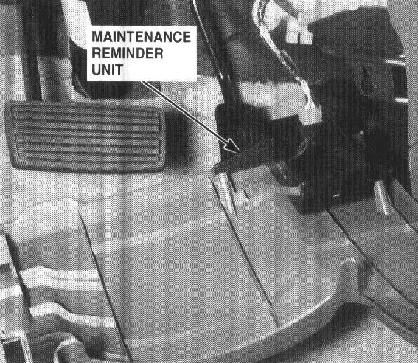

Maintenance Required Lamp/Indicator: Service and Repair
The maintenance reminder light comes ON to remind the driver that the car is due for scheduled maintenance.The maintenance reminder unit receives a vehicle speed input from the Vehicle Speed Sensor (VSS) and uses this information to compute the distance traveled. For the first 6000± 100 miles (9650 ±160 km) after the maintenance reminder light is reset, it will come ON for two seconds when you turn the ignition switch to ON (II) as a bulb check.
Between 6000 ±100 miles (9650±160 km) and 7500 ±100 miles (12070±160 km) the reminder light will come ON for two seconds when you turn the ignition switch to ON (II), and then flash for eight seconds more.
Beyond 7500 ±100 miles (12070 ±160 km) the reminder light will stay ON when the ignition switch is in the ON (II) position until the unit is reset.
To reset the unit, the car must be parked and the ignition switch in the ON (II) position. Press the reset button on the unit and hold it there for more than three seconds, and the reminder light will go OFF.
52. Rear of Dashboard Lower Cover:

Rear Of Dashboard Lower Cover